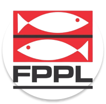

Federação Paulista de
Pesca e Lançamento
Pesca e Lançamento

A gincana contou com a participação de pescadores de todas as idades, desde crianças até experientes...
A gincana contou com a participação de pescadores de todas as idades, desde crianças até experientes...
A gincana contou com a participação de pescadores de todas as idades, desde crianças até experientes...
Associar-se é fácil! Preencha o formulário abaixo, e nossa equipe entrará em contato com você para fornecer todas as informações necessárias!
Preencha o formulário abaixo, e nossa equipe entrará em contato com você para retirar suas dúvidas!